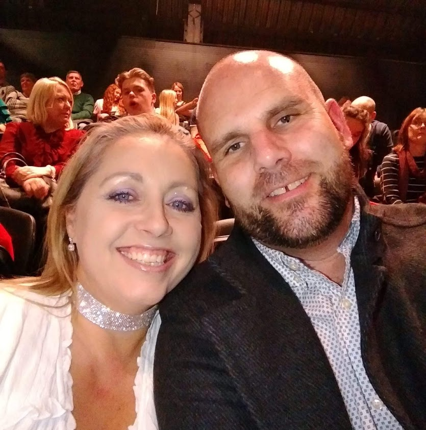

Profile
I began my teaching career in 2003, teaching in Redditch, Worcestershire, where I taught for four years, teaching a class of 7 and 8 year olds. In 2007, I relocated to Herefordshire where I have taught year 10 and 11 year olds until last week!
Before I began my teaching career I was employed as an account manager in fresh produce. I worked on multiple accounts with Asda, Safeway(now Morrisons) and Somerfield.
Hobbies
My hobbies mainly take place outdoors. I have been a keen walker for many years, mainly hill walking in Herefordshire and also venturing into Wales, the Lake District and even as far as Scotland!
Camping has also been a bit part of my life, beginning in my childhood when our family holidays would be a weeks vaction in some remote part of Wales. Sometimes we would be lucky if there was a water tap. These days I still camp with my family, although things have changed now as we only choose campsites that have toilets!
I also enjoy cycling, especially mountain biking, which when I have the time, I like to explore the woods and hills of the welsh borders.

Family
I have been married for the past 17 years to Natalie, a self-employed programme manager. Natalie is the person who has encouraged me to pursue my dream of working within the I.T industry. With her help and support I believe that I will be a success in transfering in my skills, as well as gaining new skills, to help me succeed in my future career.
We have a daughter, Etain, who is 15 years old.
Etain is a very keen dancer, and dreams of one day performing in the West End. She is a memeber of The Hereford Academy of Dance and trains almost every night of the week.
The magic of School of Code
We have the technology.
We have the capability
to make the worlds first bionic coder.
Brendan Richards will be that man.
Better than before.
Better, stronger, faster.